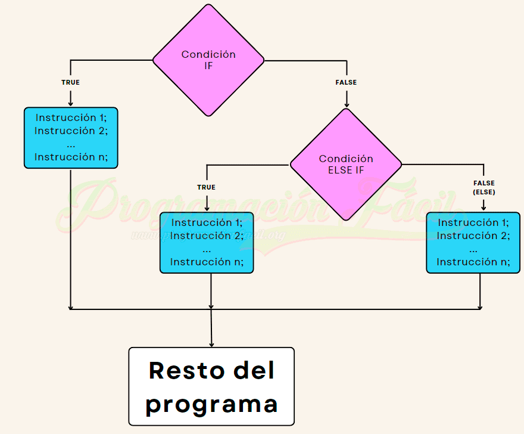

Estructura de control If
La estructura IF es una herramienta utilizada en programación para tomar decisiones en base a una condición. Permite ejecutar un bloque de código si la condición especificada es verdadera, y ignorarlo si es falsa.

¿Dónde se ocupa?
Los sistemas de control If son fundamentales en la ingeniería y la tecnología modernas.

¿Para qué se ocupan?
El «if» en programación sirve para crear lógica en un programa. Permite que el software tome decisiones dinámicas en tiempo de ejecución.
Ventajas
Las estructuras de control If permiten una gran flexibilidad en la programación, facilitando la creación de aplicaciones más dinámicas y responsivas.
Ejemplo
Un ejemplo de uso del control If es un programa que verifica si un número es par o impar y muestra un mensaje correspondiente.